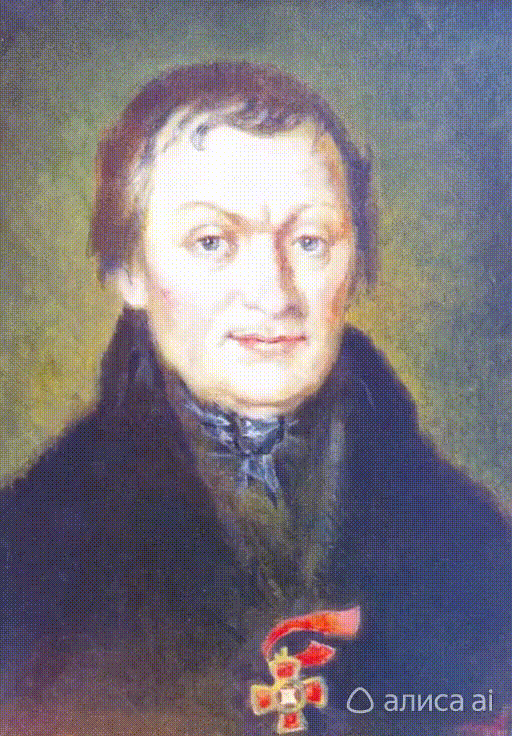
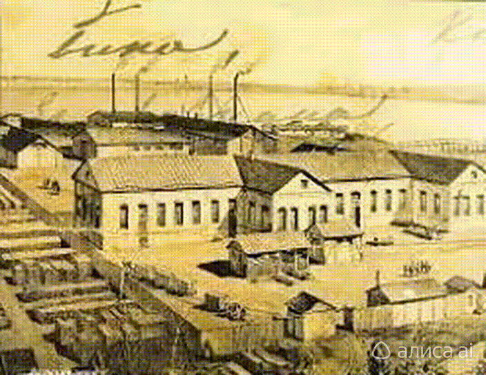

Для начала давайте немного познакомимься с историей посёлка.
Посёлок Виля появился в 1798 году благодаря промышленнику Ивану Баташёву.

Изначально это было поселение при Верхне-Железницком заводе, специализировавшемся на выпуске сельхозинструмента (кос, серпов и вил), а статус рабочего посёлка оно получило в 1945 году.

Теории о происхождение названия посёлка:
Географическая (самая вероятная). Название пошло от местной речки, которая сильно петляла и «виляла» по лесу, или от самой местности - у впадения в реку Железницу образовывалась «развилка», которую в народе звали виля или вилка.
Финно-угорская (языковая). До прихода славян здесь жили мордовские племена. На эрзянском и мокшанском языках слово «веле» означает просто «село» или «деревня». Со временем для русского уха непривычное «веле» превратилось в привычное «Виля».
Заводская (профессиональная). Поселок вырос вокруг металлургического завода братьев Баташёвых. Там ковали сельхозинструменты, в том числе вилы, что породило версию о связи названия с продукцией (хотя краеведы отмечают, что главным товаром завода были всё-таки косы).
Легендарная (фольклорная). По старинной теории, в эти глухие муромские леса сослали жену Ивана Грозного - Анну Васильчикову. От тоски и одиночества она постоянно плакала и «выла» - отсюда якобы и пошло название.